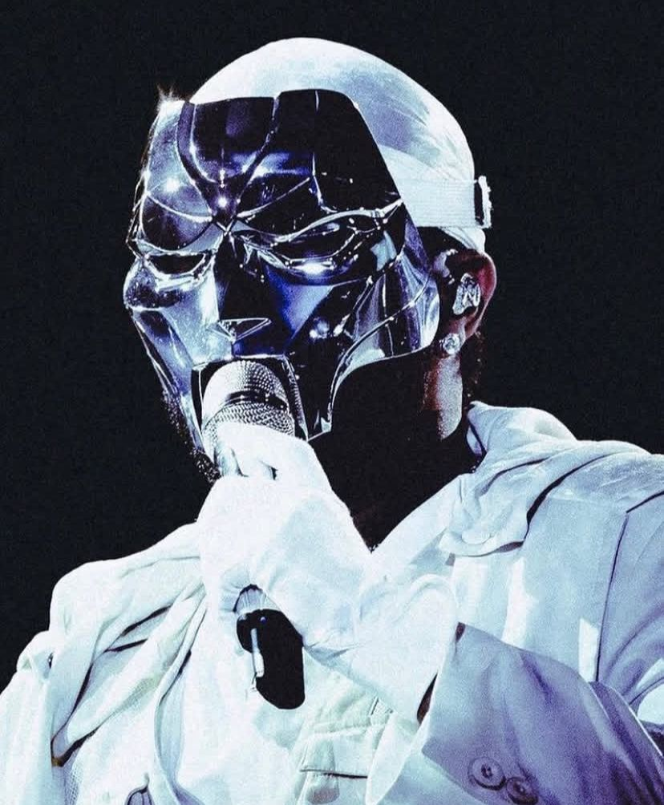
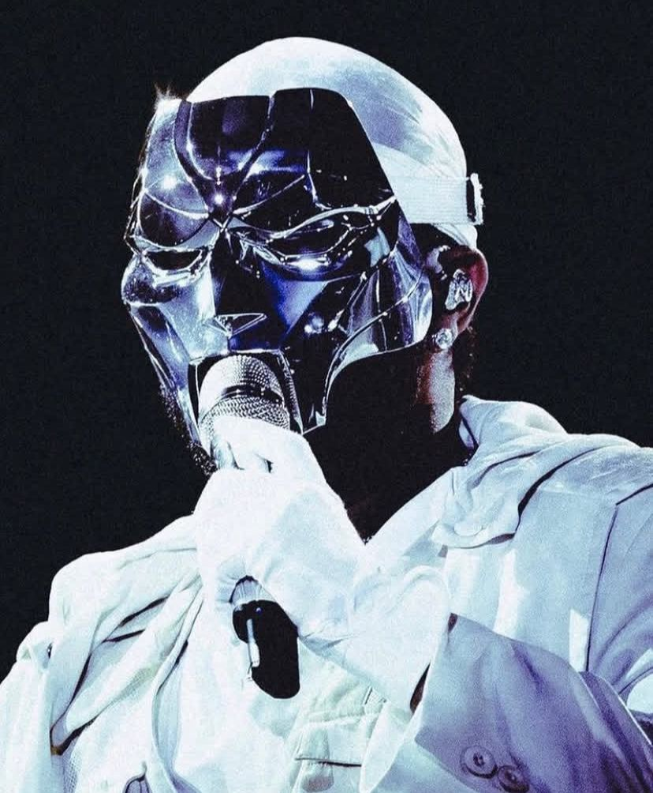

Abel Tesfaye veio ao mundo em 1990, na região de Scarborough, situada a leste de Toronto. Descendente de pais etíopes que emigraram para o Canadá durante os anos 1980, sua infância o viu frequentando a Igreja Ortodoxa Etíope e adquirindo habilidades na língua amárica por meio de sua avó. Criado principalmente por sua avó após ser abandonado por seu pai, ele cresceu em um ambiente em que sua avó trabalhava arduamente, principalmente como enfermeira, para sustentar a família. Abel nunca foi muito próximo do pai etíope Makkonen, que abandonou a família quando ele tinha 2 anos. "Tenho certeza que é uma ótima pessoa, nunca o julguei por ter nos deixado. Ele não era abusivo, não era um alcoólatra, não era um imbecil. Ele só não estava lá" ", disse à Rolling Stone. Sozinha, a mãe teve de equilibrar uma dezena de empregos para conseguir sustentar o filho em Toronto, no Canadá. Aos 17 anos, largou a escola para viver com o melhor amigo La Mar Taylor - que logo se tornou seu parceiro em "empreendimentos criativos" , como descreveu ao jornal The New York Times. Durante o dia, furtavam comida em supermercados próximos, enquanto à noite iam a bares e consumiam desde MDMA e cocaína a cogumelos, cetamina e Xanax.
Durante a adolescência, ele passou por momentos turbulentos, iniciando o consumo de maconha aos 11 anos. Encontrou inspiração e esperança na música de seus ídolos, incluindo Michael Jackson e Prince. Contudo, esse jovem rebelde, que faz uma analogia entre sua juventude e o filme Kids (1995), dirigido por Larry Clark, também era movido por ambição. Enquanto trabalhava como vendedor na American Apparel, possivelmente recrutado devido ao seu estilo urbano e corte de cabelo que lembrava o do pintor Basquiat, começou a explorar a produção musical. Foi nesse contexto que ele adotou o nome artístico The Weeknd, uma alusão à sua propensão a escapar das obrigações escolares. Junto a um amigo, eles decidiram abandonar suas vidas por um fim de semana e acabaram por nunca mais retornar.

Abel chegou a vender maconha para sobreviver. Despejado, começou a pular de cama em cama para dormir e, quando precisava de um lugar para ficar, dizia a uma garota que a amava. "Umas três garotas achavam que eu era o namorado delas". ", disse ao New York Times. Quando conseguiu um emprego em uma loja de departamento, começou a escrever e gravar músicas - foi nessa época, em 2011, que lançou a mixtape de House of Balloons, e assumiu o nome The Weeknd buscando total anonimato (o erro de grafia para 'Weekend', fim de semana em português, foi porque já havia uma banda com este nome no Canadá). O amigo postou as músicas no YouTube, e, ao final do ano, o agora agente de Drake republicou a fornada no blog da gravadora do rapper.
Um impulso de Drake Seus primeiros trabalhos R&B, caracterizados por uma atmosfera sombria, intrigante e sensual, chegaram no meio online em 2009, e suas mixtapes lançadas na internet em 2011 conquistaram inicialmente uma audiência de nicho. Essas músicas começaram a se difundir entre os conhecedores, por meio de blogs, antes de atrair a atenção da renomada crítica musical, representada por veículos como a Pitchfork e o New York Times. O rapper Drake contribuiu para a projeção de The Weeknd em março de 2011, ao mencionar o jovem prodígio em sua conta no Twitter, gerando uma onda de discussões em torno de seu talento. Durante um concerto em Londres, em junho de 2012, The Weeknd continuou a provocar reações intensas com uma interpretação provocativa da música Dirty Diana de Michael Jackson, uma canção que havia inspirado seu desejo de seguir na música. Sua presença também se fez notar no festival Coachella daquele ano, revelando uma energia e uma estética fortemente influenciadas pelo rock. A parceria não durou pois tiveram muitos desentendimentos, Drake queria assinar o The Weeknd para a OVO, mas como um compositor/artista menor, como ele fez com o PND, Majid Jordan e outros. Relatos dizem que o The Weeknd não queria ser tratado como um projeto paralelo, então ele recusou a oferta e eles cortaram laços depois disso.
Abel cativou o público com sua abordagem enigmática, optando por evitar entrevistas e só se comunicar principalmente por meio do Twitter. Essa abordagem peculiar provou ser eficaz. Em 2012, The Weeknd alcançou a fama mainstream com o lançamento de uma compilação chamada Trilogy, que reunia suas mixtapes anteriores. Na mescla de sons pop, R&B e trap em canções sobre drogas, sexo e excesso de fama, é difícil fugir do selo "linguagem explícita". "XO" é o nome da gravadora do The Weeknd, a XO Records, e do fandom do artista. A gravadora já lançou álbuns de artistas como The Weeknd, Belly, Derek Wise, Nav, 88Glam, Black Atlass e Chxrry22.
O primeiro álbum de estúdio do cantor, que o consolidou como uma força criativa no R&B alternativo
O álbum que levou o cantor ao sucesso global, com os hits "Can't Feel My Face" e "The Hills"
O álbum que contou com a participação de Daft Punk, Lana Del Rey, Future e Kendrick Lamar
O álbum que trouxe o hit "Blinding Lights", uma das músicas mais tocadas da década. A estética do álbum foi inspirada em filmes como "Cassino" (1995), "Medo e Ódio em Las Vegas" (1998) e "Coringa" (2019)
O segundo álbum de originais no número 2 na parada estadunidense Billboard 200
A coletânea de canções número 1 na parada estadunidense Billboard 200
A primeira coletânea musical do artista, lançada em 2012, que apresenta as mixtapes lançadas no ano anterior, House of Balloons, Thursday e Echoes of Silence
O último álbum da trilogia, que encerrará a série que começou com After Hours em 2020 e continuou com Dawn FM em 2022
Em 2013, o cantor e compositor canadense The Weeknd lançou seu álbum de estreia, Kiss Land, que contou com participações de Drake e Kavinsky. Uma das faixas do álbum, Love Me Harder, foi incluída na trilha sonora do filme Jogos Vorazes: Em Chamas, ajudando a vender quase 100 mil cópias do disco. Em 2015, The Weeknd participou da trilha sonora do filme Cinquenta Tons de Cinza. Naquele mesmo ano, The Weeknd abriu shows para o cantor Justin Timberlake e lançou um remix da música Drunk In Love, da cantora Beyoncé. Ele também participou do álbum Matangi da cantora MIA e da turnê Would You Like A Tour de Drake. Ao longo de sua carreira, The Weeknd colaborou com diversos artistas, incluindo Daft Punk, Rosalía, Lana Del Rey, Madonna, Beyoncé, Kanye West, Disclosure, SZA, Jim Carrey, Quincy Jones, Tyler, The Creator, Lil Wayne, Doja Cat, Travis Scott, Sia, Oneohtrix Point Never, Gesaffelstein, Ariana Grande e Alicia Keys.
 

Diretamente do sucesso do single The Hills, o mundo acompanha a trajetória de The Weeknd com diversos sucessos e álbuns que traduzem a maestria e profundidade nas composições. A notoriedade de Abel foi construída por meio dos principais álbuns, como Starboy e Beauty Behind The Madness, que criaram uma base sólida do formato sonoro do artista. O impacto mundial, ou pode-se dizer a virada de chave, imposto por The Weeknd, foi a construção estética visual e sonora desenvolvida para o álbum After Hours que modificou a forma de consumir, produzir e impactar a audiência. Sendo um dos álbuns mais intimistas de Abel por transparecer seus sentimentos pós-término e todo o universo emocional do cantor, a narrativa midiática desenvolvida para a obra renovou a indústria e como um músico pode atingir os seus ouvintes. E claro, artistas como o Travis Scott são um grande exemplo de inovação e de execução de convergência de mídias, como o evento no Fortnite. Muito bem recebido pela crítica, o After Hours continua musicalmente no gênero R&B, adicionando brilhantismo e nostalgia com o synth-pop dos anos 80. A composição do álbum revigorou completamente Abel, que até hoje se utiliza dessa ambiência oitentista, o levando ao ápice da sua carreira, sendo o artista mais ouvido no Spotify. A mudança de gênero e da composição de elementos das novas músicas, como exemplo Blinding Lights, era vista como fracasso pelo artista. Assim, a visão da narrativa e a sensibilidade sonora encantou o mundo pelos seus detalhes, intimismo e inovação. Com a produção e o lançamento dos clipes de Heartless e Blinding Lights, se desenvolve uma atmosfera mais pessoal, no qual The Weeknd deseja contar seus sentimentos e anseios em cada faixa da produção. Os acontecimentos de cada clipe interferem no figurino, ambientação e formato de apresentação que o artista fará, como shows da turnê ou apresentações em programas como Jimmy Kimmel. Esse ambiente proporcionou uma amplitude e repercussão muito maior de seu álbum pela maneira que toda a história foi contada